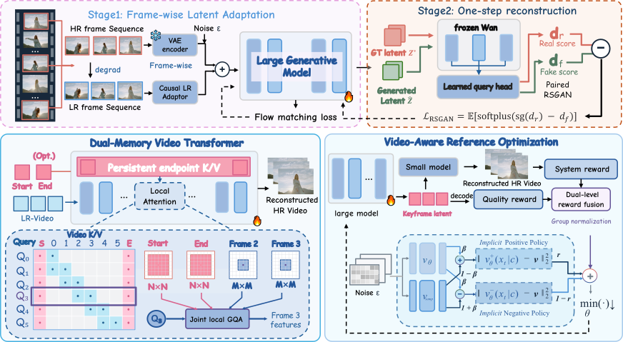

Sparse Generative Relay
Generate reusable references at sparse keyframes.
University of Science and Technology of China
arXiv 2026
TL;DR: Sparse generative keyframes guide a lightweight network for streaming video super-resolution.

Large generative models can recover realistic detail in real-world video super-resolution (VSR), but processing an entire video with them is computationally expensive. In this work, we present RelayVSR, a streaming VSR framework built on the Sparse Generative Relay mechanism. A large generative model generates reference latents for sparse keyframes, while a lightweight VSR network uses these references and low-resolution video to super-resolve every frame. The lightweight VSR network, implemented as a Dual-Memory Video Transformer, reuses keyframe information across frames and updates recent video context, supporting first-keyframe conditioning and dual-endpoint conditioning with bounded lookahead. However, errors in shared keyframes can propagate and accumulate across output frames, making keyframe quality alone an insufficient optimization target. We address this collaboration gap with Video-Aware Reference Optimization (VARO), which uses reinforcement learning to update the large generative model with two reward levels: a system-level reward evaluates videos produced by the fixed lightweight VSR network, while a reference-level reward evaluates decoded keyframe quality. VARO improves final video quality over direct joint training, and its dual-level rewards outperform a system-level reward alone. At 1080p on a single NVIDIA A100 80GB, dual-endpoint RelayVSR with a 15-frame keyframe interval reaches 29.29 FPS, 13.82 GB peak GPU memory, and 0.327 s first-frame model latency, compared with 7.80 FPS, 24.447 GB, and 2.83 s for FlashVSR-Tiny. The code is available at https://github.com/kopperx/RelayVSR.
Large-model references, lightweight video reconstruction, and video-aware optimization.

Generate reusable references at sparse keyframes.
Combine keyframe details with recent video context.
Optimize references using video and keyframe rewards.
Left: input. Right: RelayVSR output. Drag the divider to compare.
Complete 1,000-frame sequences. Left: input. Right: RelayVSR output.